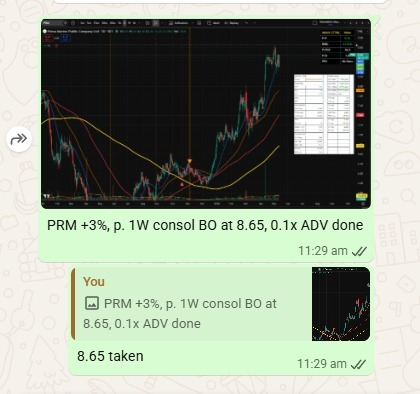
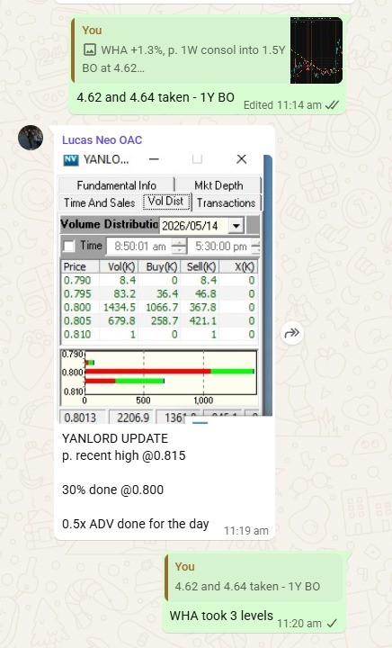
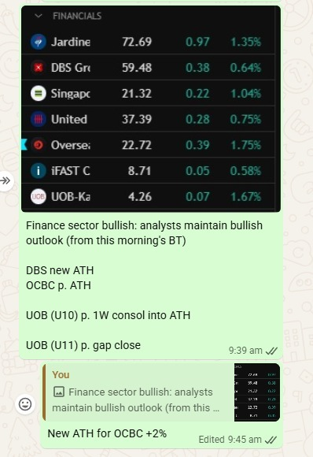
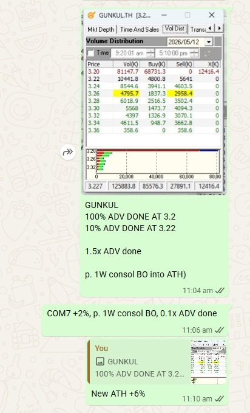
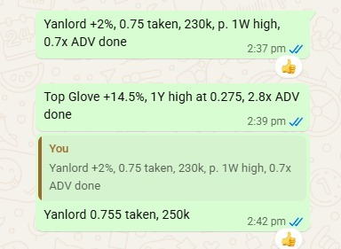
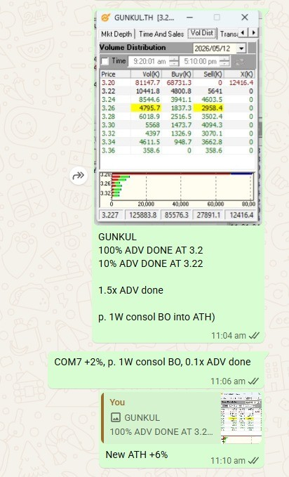
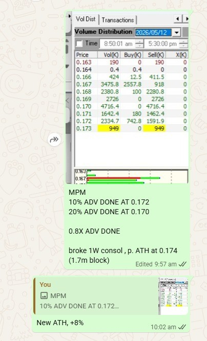

Close ×
Ex-national athlete (7x Champion, Ranked #3), equity trader, and founder. Raised $500K seed funding and scaled a business from zero to $120K+ profit in Year 1. Experience across SGX, HKEX, SET, and US markets. Builds institutional-grade analytics on Bloomberg BQuant and Python.
Intraday calls made during live market hours using Level 2 order flow, price action, and tape reading. Reads probability of price breaking through walls using volume done at level, ATR, RVOL, and absorption signals. Each call documented within 5 minutes — no post-hoc selection.







Trading independently since 2018 across futures, CFDs, options, and spot FX. Core edge is order flow — CVD divergence, institutional flow, and liquidity sweeps across NQ1!, XAUUSD, and single-name options. Combines macro regime awareness with high-frequency execution using custom-built tooling.
A four-module suite combining credit and options signals for pre-market equity positioning. Skew Term Structure classifies panic vs structural fear across 10D/30D/60D tenors. Skew vs CDS Scatter maps stocks across four actionability quadrants by credit stress and put demand. CDS vs Equity Divergence detects lead-lag dislocations between credit and price. SOD Options Signal Dashboard v2 composites all signals — IV percentile, put/call ratio, CDS z-score, skew, IV/HV spread, price momentum, and analyst target — into a single bias and conviction score per stock.
A dual-layer FA + TA screener that combines valuation metrics with technical structure to score the probability of a stock breaking out from consolidation. Computes consolidation breadth % and width %, locates price within the consolidation phase, and overlays fundamental valuation filters to produce a single breakout probability score across all four markets.
Daily sell-side target price and rating revision scanner using Bloomberg BQL's per-broker best_target_price time series. Detects intraday broker-level TP changes with upgrade/downgrade classification, filtering by minimum move threshold. Outputs a sortable table with previous and new TP, % change, spot price, consensus TP, and an inline SVG 90-day TP distribution strip per stock — across US, SG, HK, and TH universes.
Per-stock equity dashboard scoring companies on an FVM framework — quality (ROIC vs threshold), value (P/E vs peer median ±1SD), and growth (net income growth vs threshold). Surfaces fundamentals, TA support and resistance levels, a peer comparison table, financial history charts, and sell-side ANR consensus — all pulled live from Bloomberg. Covers SG, HK, TH, and US universes.
Pre-session dashboard aggregating Fear & Greed, VIX, GEX, put/call ratio, CVD, and sentiment into a nightly directional brief for NAS100. Includes GEX regime detection, Max Pain liquidity trap identification, and an AI-generated pre-session brief. Analyst flow monitor tracks real-time ratings and consensus for MAG7.
Automated morning tear sheet with cross-asset coverage — equities, rates, FX, and commodities. Aggregates overnight moves, key macro events, and pre-market signals into a single-page brief. Designed for rapid situational awareness before Asia open. Cron-scheduled at 06:30 SGT on weekdays.
Full-stack real-time crush margin monitor computing GCM, NCM, and break-even bean price across CBOT, DCE, FX, and SHIBOR. A port stock regime filter — keyed on 12-week change in Chinese imported soybean inventory — resolves signal breakdown during the 2024–2025 oversupply period, producing positive returns across all calendar years in the backtest.
Built an interactive live simulator covering the full derivatives product suite — DCIs, accumulators, barrier options (KO/KI), vanilla options, and perpetual futures with funding rate mechanics. Models both client payoff profiles and dealer hedging dynamics, including Greeks exposure and barrier discontinuity risk across each product type.
A suite of custom TradingView indicators built around order flow microstructure. CVD divergence detector uses pivot-based logic to flag institutional absorption. DEFF (Delta Efficiency) measures price change per unit of net aggressive flow, detecting three-stage exhaustion sequences. Volume Delta + Aggression Ratio with SD bands surfaces directional conviction. Breakout Probability Scoring composites all signals into a single bull/bear score via a compact overlay table.
NTU Economics (Honours) · Singapore · Open to full time opportunities in equity trading, sales and trading, derivatives, and quantitative analytics.